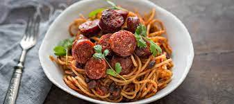

Chorizopasta

Description
Spicy pasta dish. Easy and delicious!
Ingredients
- Penne pasta
- Red bell pepper
- Green bell pepper
- Onion
- Chorizo
- Valio Koskenlaskija
Steps
- Cook pasta in salted water
- Add chorizo, bell peppers and onions to the pan and cook until bell peppers soften a little
- Add Koskenlaskija to the pan and stir until sauce starts to bubble
- Strain pasta and add to the sauce, and stir until combined
- Enjoy!